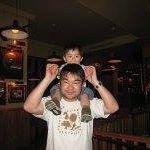

father, golfer, hockey player, traveler, manager, director →Programmer
Getting started
An overview of Programming for dammies
An overview of Programming for dammies
1974年東京都練馬区生まれ / 武蔵野市在住 / 三児の父（全員男）。 私が大学生の時にインターネットというものが世の中に知られるようになりました。当時（1995年頃）は電話回線。モデムを使いモザイクというネットスケープ社のブラウザでネットにアクセスしていました。 GoogleもFacebookもiPhoneもありませんでした。 その頃にシリコンバレーで活躍するネットベンチャーに魅力を感じ、自分でもHTMLを独学しました。それ以来、Web業界に携わってきましたが、エンジニアではなくマーケティングやマネージメントがメインでした。 父になり、いつか子供がプログラミングができるようになればよいな、と思うようになり、教えられるようにプログラミングを自分でもできるようになりたい、と思うようになりました。 未だにシリコンバレーに憧れていて、いつかはアメリカに移住したいなぁと思っています。